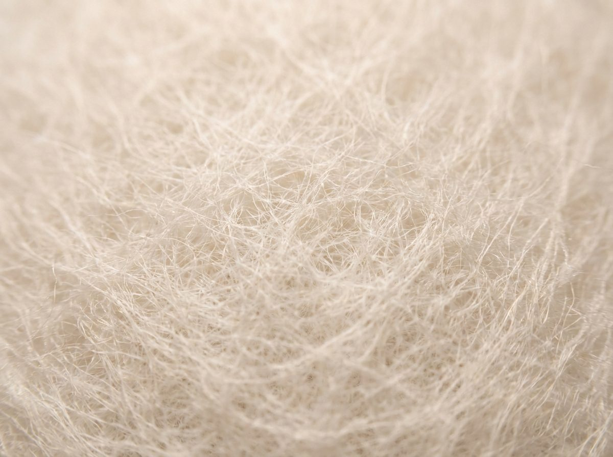

Industrial filtration
Needle-felt filter media, finished KOFIL filter bags and elements for separating solid particles from air and liquids — engineered to your temperature, chemical resistance and filtration efficiency.

Where our media and elements are used.
Industrial dedusting
Baghouse and cartridge dedusting in cement, wood, metallurgy and minerals.
Filter bags & cassettes
Finished KOFIL bags, cages and cassettes confectioned to your housing.
Air-handling elements
Panel and pocket media for HVAC and process-air units, ISO 16890 classified.
Liquid filtration
Media for clarification and solid separation in liquid processes.
Filter media selection guide.
Indicative ranges for standard needle-felt media. Final specification is confirmed per order.
| Media | Fibre | Weight (g/m²) | Temp. cont./peak | Air perm. (l/m²·s) | ISO 16890 | Chem. resistance |
|---|---|---|---|---|---|---|
| PP — polypropylene | PP | 400–550 | 90 / 100 °C | 150–350 | Coarse–ePM10 | Acids ●●● · Alkalis ●●● |
| PES — polyester | PET | 350–550 | 130 / 150 °C | 120–300 | ePM10–ePM2.5 | Acids ●● · Alkalis ●● |
| PAN — acrylic | PAN | 400–550 | 125 / 140 °C | 120–250 | ePM10 | Hydrolysis ●●● |
| Meta-aramid | AR | 500–550 | 200 / 240 °C | 130–250 | ePM10 | Thermal ●●● |
| PPS | PPS | 550 | 190 / 200 °C | 130–250 | ePM10 | Acids ●●● · Alkalis ●●● |
| PTFE-membrane laminate | ePTFE + PES/PPS | + membrane | per base | low | ePM1 | Surface filtration |
| Antistatic AGT-BT | + conductive grid | per base | per base | per base | per base | ATEX zones · DEKRA EXAM |
ISO 16890 replaces EN 779
EN 779 (classes G2–F9) was withdrawn in 2018 and replaced by ISO 16890. We classify all air-filtration media to ISO 16890. Indicative conversion:

Certified processes.
Konus Konex operates to international quality and environmental-management standards. Antistatic AGT-BT media carry a DEKRA EXAM certificate for use in ATEX zones. Declarations of conformity to EU 1935/2004 and 10/2011 for food-contact applications, and REACH, are provided on request.
All certificatesDatasheets & declarations.
Datasheets are sent to your business e-mail — no password wall. Request below and receive them immediately.
Common questions.
Don't see your answer? Our filtration engineers reply within one business day.
{{ q.a }}
Filtration quote & datasheets.
Describe the application, working conditions and quantities — we propose the media and finished element, and attach the datasheets. Program is preselected.
Thank you for your inquiry.
We've logged your request. Our filtration team will reply within one business day with a material proposal, datasheets and a quote.